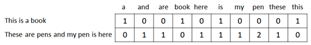
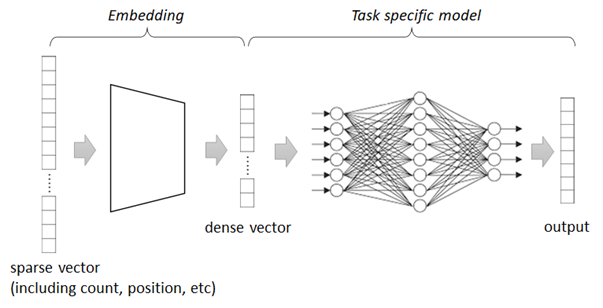
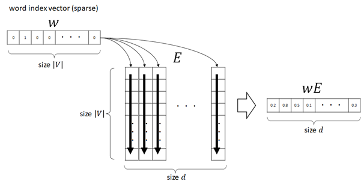
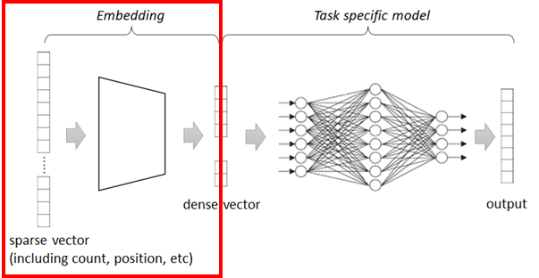
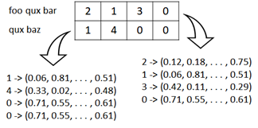
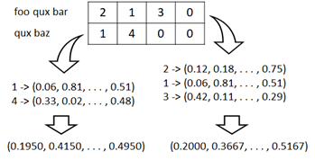
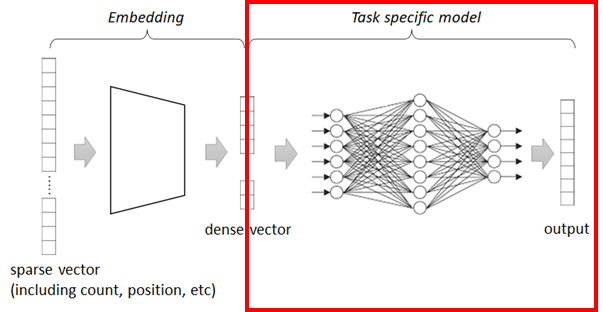

Embeddings#
In NLP, embeddings are the vectors which represent some aspects (meaning) for words or documents, they are represented in the form of mathematical matrices.
There are many types of embeddings - such as, character embedding, word embedding, sentence embedding, or document embedding, we will explore sentence vectorization in this tutorial.
Sparse Vectors#
A sparse vector is a type of vector in which most of its elements are zero. This concept is prevalent in various fields such as computer science, mathematics, and data science, particularly in areas dealing with high-dimensional data. Understanding sparse vectors is crucial for efficient data storage, processing, and analysis.
Install required packages
!pip install scikit-learn nltk pandas
import nltk
nltk.download("popular")
Count Vectorize#
One of primitive method to vectorize a text is count vectorization.
This method is based on one hot vectorizing and each element represents the count of that word in a document as follows.

Count vectorization is very straighforward and comprehensive for humans, but it’ll build sparse vectors (in which, almost elements are zero) and also resource-intensive.
from sklearn.feature_extraction.text import CountVectorizer
from nltk import word_tokenize
from nltk.stem import WordNetLemmatizer
import pandas as pd
# Lemmatizer helps to reduce words to their root form
lemmatizer = WordNetLemmatizer()
# Convert :
# "pens" -> "pen"
# "wolves" -> "wolf"
def my_lemmatizer(text):
return [lemmatizer.lemmatize(t) for t in word_tokenize(text)]
vectorizer = CountVectorizer(
tokenizer=my_lemmatizer)
texts = [
"This is a book",
"These are pens and my pen is here"
]
vectors = vectorizer.fit_transform(texts)
cols = [k for k, v in sorted(vectorizer.vocabulary_.items(), key=lambda item: item[1])]
df = pd.DataFrame(vectors.toarray(), columns=cols)
df
| a | and | are | book | here | is | my | pen | these | this | |
|---|---|---|---|---|---|---|---|---|---|---|
| 0 | 1 | 0 | 0 | 1 | 0 | 1 | 0 | 0 | 0 | 1 |
| 1 | 0 | 1 | 1 | 0 | 1 | 1 | 1 | 2 | 1 | 0 |
This vectorization often results into low performance (low accuracy) in several ML use-cases.
(Since the neural network won’t work well with very high-dimensional and sparse vectors.)
The following is the example for classifying document into 20 e-mail groups.
Note : In the real usage, train with unknown words with a specific symbol, such as “[UNK]”.
from sklearn.datasets import fetch_20newsgroups
from sklearn.naive_bayes import MultinomialNB
from sklearn import metrics
# Load train dataset
train = fetch_20newsgroups(
subset="train",
remove=("headers", "footers", "quotes"))
# Count vectorize
vectorizer.fit(train.data)
X_trian = vectorizer.transform(train.data)
y_train = train.target
# Train
clf = MultinomialNB(alpha=.01)
clf.fit(X_trian, y_train)
# Evaluate accuracy
test = fetch_20newsgroups(
subset="test",
remove=("headers", "footers", "quotes"))
X_test = vectorizer.transform(test.data)
y_test = test.target
y_pred = clf.predict(X_test)
score = metrics.accuracy_score(y_test, y_pred)
print("classification accuracy: {}".format(score))
/home/tsmatsuz/.local/lib/python3.6/site-packages/sklearn/feature_extraction/text.py:489: UserWarning: The parameter 'token_pattern' will not be used since 'tokenizer' is not None'
warnings.warn("The parameter 'token_pattern' will not be used"
classification accuracy: 0.6240042485395645
TF-IDF weighting#
TF-IDF (Term Frequency - Inverse Document Frequency) weighting is a widely used statistical method for evaluating the importance of a word in a document relative to a collection of documents (corpus).
In earlier example, the weight of word “book” or “pen” is the same as the weight of words “a”, “for”, “the”, etc.
Using TF-IDF, you can prioritize the words that rarely appear in the given corpus.
TF (=Term Frequency) is
Measures how frequently a term appears in a document.
in which, \( \#d(w) \) means the count of word \(w\) in document \(d\).
TF is the normalized value of the count of word \(w\) in document \(d\).
IDF (=Inverse Document Frequency) is
Measures how important a term is across the entire corpus.
This term diminishes the weight of terms that occur very frequently in the corpus and increases the weight of terms that are rare. This helps in highlighting terms that are more informative.
TF-IDF is
where \(D\) is large corpus (a set of documents).
If some word \(w\) (such like, “a”, “the”) is included in all document \(d \in D\), the second term will be relatively small.
If some word is rarely included in \(d \in D\), the second term will be relatively large.
Let’s see the following example.
from sklearn.feature_extraction.text import CountVectorizer, TfidfTransformer
from nltk import word_tokenize
from nltk.stem import WordNetLemmatizer
lemmatizer = WordNetLemmatizer()
# Convert :
# "pens" -> "pen"
# "wolves" -> "wolf"
def my_lemmatizer(text):
return [lemmatizer.lemmatize(t) for t in word_tokenize(text)]
# Count vectorize
count_vectorizer = CountVectorizer(tokenizer=my_lemmatizer)
texts = [
"This is a book",
"These are pens and my pen is here"
]
count_vectors = count_vectorizer.fit_transform(texts)
# TF-IDF weighting
tfidf_trans = TfidfTransformer(use_idf=True).fit(count_vectors)
tfidf_vectors = tfidf_trans.transform(count_vectors)
As you can see above, only the word “is” is included in both documents.
The word “pen” is also used twice, however, this word is not used in the first document.
As a result, only the word “is” has small value for IDF weights.
cols = [k for k, v in sorted(count_vectorizer.vocabulary_.items(), key=lambda item: item[1])]
df = pd.DataFrame([tfidf_trans.idf_], columns=cols)
df
| a | and | are | book | here | is | my | pen | these | this | |
|---|---|---|---|---|---|---|---|---|---|---|
| 0 | 1.405465 | 1.405465 | 1.405465 | 1.405465 | 1.405465 | 1.0 | 1.405465 | 1.405465 | 1.405465 | 1.405465 |
The generated vectors has the following values.
As you can see below, the word “is” has relatively small value compared with other words in the same document.
The second document (“These are pens and my pen is here”) has more words than the first document (“This is a book”), and then TF values (normalized values) in the second document are small rather than ones in the first document.
The word “pen” appears in the second documnt twice, and it then has 2x values compared to other words in this document.
df = pd.DataFrame(tfidf_vectors.toarray(), columns=cols)
df
| a | and | are | book | here | is | my | pen | these | this | |
|---|---|---|---|---|---|---|---|---|---|---|
| 0 | 0.534046 | 0.000000 | 0.000000 | 0.534046 | 0.000000 | 0.379978 | 0.000000 | 0.000000 | 0.000000 | 0.534046 |
| 1 | 0.000000 | 0.324336 | 0.324336 | 0.000000 | 0.324336 | 0.230768 | 0.324336 | 0.648673 | 0.324336 | 0.000000 |
Let’s see the example for classifying text into 20 e-mail groups. (Compare the result with the previous one.)
from sklearn.datasets import fetch_20newsgroups
from sklearn.naive_bayes import MultinomialNB
from sklearn import metrics
# Load train dataset
train = fetch_20newsgroups(
subset="train",
remove=("headers", "footers", "quotes"))
# Count vectorize
count_vectorizer.fit(train.data)
X_train_count = count_vectorizer.transform(train.data)
# TF-IDF weighting
tfidf_trans = TfidfTransformer(use_idf=True).fit(X_train_count)
X_train_tfidf = tfidf_trans.transform(X_train_count)
# Train
y_train = train.target
clf = MultinomialNB(alpha=.01)
clf.fit(X_train_tfidf, y_train)
# Evaluate accuracy
test = fetch_20newsgroups(
subset="test",
remove=("headers", "footers", "quotes"))
X_test_count = count_vectorizer.transform(test.data)
X_test_tfidf = tfidf_trans.transform(X_test_count)
y_pred = clf.predict(X_test_tfidf)
y_test = test.target
score = metrics.accuracy_score(y_test, y_pred)
print("classification accuracy: {}".format(score))
/home/tsmatsuz/.local/lib/python3.6/site-packages/sklearn/feature_extraction/text.py:489: UserWarning: The parameter 'token_pattern' will not be used since 'tokenizer' is not None'
warnings.warn("The parameter 'token_pattern' will not be used"
classification accuracy: 0.6964949548592672
TF-IDF can also be applied to dense vectors as follows :
where \(v(\cdot)\) is word’s vectorization (dense vector) and \(\verb|tfidf|(\cdot)\) is TF-IDF weighting.
Dense Vectors#
As you saw in the previous examples, the generated count vectors are sparse and a lot of algorithms won’t work well with this high-dimensional vectors.
For this reason, refined trainers will transform sparse vectors into non-sparse forms (dense vectors) and process some tasks (such as, NLP classification, etc) againt these dense vectors in practice.

👉 In today’s advanced embedding, the embedding layer can sometimes be the model of non-linear neural networks.
👉 But, in most cases, word embedding is essentially a lookup table which maps a sparse vector into a dense vector.
Assuming \(\mathbf{w}\) is a word index vector (i.e, sparse vector) with voculabrary size \(|V|\),
👉 in which the i-th element of \(\mathbf{w}\) is \(1\) and other elements are \(0\),
👉 the embedding table \(\mathbf{E}\) will then be a \( |V| \times d \) matrix which converts a sparse vector \(\mathbf{w}\) to a \(d\)-dimensional dense vector by \( \mathbf{w} \mathbf{E} \). (i.e, The i-th row of \(\mathbf{E}\) is a dense vector for a word \(\mathbf{w}\).)
The \( |V| \times d \) parameters will then be trained by some task.

👉 Note : A lookup table cannot be used in sentence embedding, because the number of sentences is not finite.
👉 The generated dense vector (i.e, non-sparse form) will represent some aspects (meaning) for words or documents.
In order to get the trained (optimal) parameters of \(\mathbf{E}\) (and optimal dense vectors), you can take either of the following 3 options :
Train embeddings \(\mathbf{E}\) from the beginning.
Use existing pre-trained embeddings \(\mathbf{E_0}\) trained by a large text corpus. (For instance, see Hugging Face hub for a lot of pre-trained SOTA models.)
Download pre-trained embeddings \(\mathbf{E_0}\) and train (fine-tune) \(\mathbf{E_0}\) furthermore to get new optimal \(\mathbf{E_1}\).
💡 Note : In order to fine-tune the pre-trained vectors, there also exists the following approaches :
Find an additional matrix \(\mathbf{T} \in \mathbb{R}^{d \times d} \), with which we can obtain new embedding \(\mathbf{E} \mathbf{T}\)
Find an additional matrix \(\mathbf{A} \in \mathbb{R}^{|V| \times d} \), with which we can obtain new embedding \(\mathbf{E} + \mathbf{A}\)
Hybrid of 1 and 2
In a lot of today’s NLP models, the word is embedded into dense vectors and the sequence of words in document is trained by RNN-based learners , Attention-based learners, or Transformers with a large corpus .
However, for the purpose of understanding, we’ll see a simple classification trainer, in which the word is embedded and the sequence is combined by using primitive continuos bag-of-words (CBOW) representation.
In this example, we’ll train a model (which includes custom embedding) to detect sentiment with movie review dataset (IMDB) for natural language processing.
CBOW (continuos bag-of-words) representation is a combination of vectors, which is obtained by the mean (average) of vectors as follows. (The magnitude of vector doesn’t then depend on the length of sentence.)
\( \frac{1}{k} \sum_{i=1}^{k} v(w_i) \) where \(v(\cdot)\) is dense vector.
Install required packages
!pip install torch==1.13.1 torchtext==0.14.1 torchdata==0.5.1 --extra-index-url https://download.pytorch.org/whl/cu114
!pip install nltk numpy pandas
import nltk
nltk.download("popular")
Prepare data#
In this example, we use IMDB dataset (movie review dataset).
from torchtext.datasets import IMDB
train_iter = IMDB(split="test")
The record number is as follows.
len(list(train_iter))
25000
Now we pick up and see the first row of records.
In this dataset, it includes the review text and 2-class flag 1 or 2 for satisfied/dissatisfied respectively.
# test (print first row)
for label, text in train_iter:
print("***** text *****")
print(text)
print("***** label *****")
print(label)
break
***** text *****
I love sci-fi and am willing to put up with a lot. Sci-fi movies/TV are usually underfunded, under-appreciated and misunderstood. I tried to like this, I really did, but it is to good TV sci-fi as Babylon 5 is to Star Trek (the original). Silly prosthetics, cheap cardboard sets, stilted dialogues, CG that doesn't match the background, and painfully one-dimensional characters cannot be overcome with a 'sci-fi' setting. (I'm sure there are those of you out there who think Babylon 5 is good sci-fi TV. It's not. It's clichéd and uninspiring.) While US viewers might like emotion and character development, sci-fi is a genre that does not take itself seriously (cf. Star Trek). It may treat important issues, yet not as a serious philosophy. It's really difficult to care about the characters here as they are not simply foolish, just missing a spark of life. Their actions and reactions are wooden and predictable, often painful to watch. The makers of Earth KNOW it's rubbish as they have to always say "Gene Roddenberry's Earth..." otherwise people would not continue watching. Roddenberry's ashes must be turning in their orbit as this dull, cheap, poorly edited (watching it without advert breaks really brings this home) trudging Trabant of a show lumbers into space. Spoiler. So, kill off a main character. And then bring him back as another actor. Jeeez! Dallas all over again.
***** label *****
1
To get the better performance (accuracy), we standarize the input’s review text as follows.
👉 Make all words to lowercase
(ex. “I am a Greatest Showman !” -> “i am a greatest showman !”)
👉 Remove all stop words, such as, “a”, “the”, “is”, “i”, etc
(ex. “i am a greatest showman !” -> “greatest showman !”)
👉 Remove all punctuation, such as, “!”, “?”, “#”, etc
(ex. “greatest showman !” -> “greatest showman”)
Note : Some normalization - such as, changing to lower case - is also done in the following tokenizer.
N-gram words (such as, “New York”, “Barack Obama”) and lemmatization (standardization for such as “have”, “had” or “having”) should be dealed with, but here I have skipped these pre-processing.
In the strict pre-processing, we should also care about the polysemy. (The different meanings in the same word should have different tokens.)
import re
from nltk.corpus import stopwords
import string
def standarize_text(text):
new_text = text
# 1. To lowercase
new_text = new_text.lower()
# 2. Remove stop words
for w in stopwords.words("english"):
new_text = re.sub(
"(^|\s+)%s(\s+|$)" % re.escape(w),
" ",
new_text)
new_text = new_text.strip()
# 3. Remove punctuation
new_text = new_text.translate(str.maketrans("", "", string.punctuation))
new_text = new_text.strip()
return new_text
# test
standarize_text("I am a Greatest Showman !")
'greatest showman'
In order to create a word’s index vector as follows, first we create a list for words (vocab) used in the training set.

from torchtext.data.utils import get_tokenizer
from torchtext.vocab import build_vocab_from_iterator
vocab_size = 10000
# create tokenizer
tokenizer = get_tokenizer("basic_english")
# define tokenization function
def yield_tokens(data_iter):
for _, text in data_iter:
text = standarize_text(text)
yield tokenizer(text)
# build vocabulary list
vocab = build_vocab_from_iterator(
yield_tokens(train_iter),
specials=["<unk>"],
max_tokens=vocab_size
)
vocab.set_default_index(vocab["<unk>"])
# get list for index-to-word, and word-to-index
itos = vocab.get_itos()
stoi = vocab.get_stoi()
# test
vocab(["greatest", "movie", "show", "abcdefghijk"])
[681, 2, 41, 0]
Now we build data loader with a collator function, in which data is pre-processed.
In this collator,
The input’s text is standarized with previous
standarize_textfunction.The input’s text is then tokenized into word’s index (integer’s list).
Limit to 256 tokens.
Generate mask array. For instance, if the length of token is 3, it will become
[1.0, 1.0, 1.0, 0.0, 0.0, ..., 0.0].Pad all sequence by zero, if the length of sequence is shorter than max tokens.
Convert curent label 1 or 2 into 0 or 1 respectively.
import torch
from torch.utils.data import DataLoader
seq_len = 256
device = torch.device("cuda" if torch.cuda.is_available() else "cpu")
def collate_batch(batch):
label_list, token_list, mask_list = [], [], []
for (label, text) in batch:
# 1. standarize text
text = standarize_text(text)
# 2. generate word's index vector
tokens = vocab(tokenizer(text))
# 3. limit to first tokens
tokens = tokens[:seq_len]
# 4. generate mask array
length = len(tokens)
mask_array = [float(i < length) for i in range(seq_len)]
# 5. pad sequence
tokens += [0] * (seq_len - len(tokens))
# 6. convert label into 0 or 1
label = label - 1
# add to list
label_list.append(label)
token_list.append(tokens)
mask_list.append(mask_array)
# convert to tensor
label_list = torch.tensor(label_list, dtype=torch.int64).to(device)
token_list = torch.tensor(token_list, dtype=torch.int64).to(device)
mask_list = torch.tensor(mask_list, dtype=torch.float).to(device)
return label_list, token_list, mask_list
dataloader = DataLoader(
train_iter,
batch_size=128,
shuffle=True,
collate_fn=collate_batch
)
# test
for labels, tokens, masks in dataloader:
break
print("label shape in batch : {}".format(labels.size()))
print("token shape in batch : {}".format(tokens.size()))
print("mask shape in batch : {}".format(masks.size()))
print("***** label sample *****")
print(labels[0])
print("***** token sample *****")
print(tokens[0])
print("***** input text *****")
print([itos[i] for i in tokens[0]])
print("***** mask *****")
print(masks[0])
label shape in batch : torch.Size([128])
token shape in batch : torch.Size([128, 256])
mask shape in batch : torch.Size([128, 256])
***** label sample *****
tensor(0, device='cuda:0')
***** token sample *****
tensor([8261, 4, 1440, 23, 5, 17, 27, 0, 0, 2639, 232, 3768,
3301, 852, 0, 226, 0, 0, 6659, 0, 343, 87, 310, 224,
1476, 4918, 0, 0, 0, 0, 0, 4035, 680, 138, 3386, 0,
62, 859, 1068, 11, 0, 379, 3355, 0, 105, 5, 10, 71,
530, 200, 0, 0, 0, 0, 0, 0, 0, 0, 0, 0,
0, 0, 0, 0, 0, 0, 0, 0, 0, 0, 0, 0,
0, 0, 0, 0, 0, 0, 0, 0, 0, 0, 0, 0,
0, 0, 0, 0, 0, 0, 0, 0, 0, 0, 0, 0,
0, 0, 0, 0, 0, 0, 0, 0, 0, 0, 0, 0,
0, 0, 0, 0, 0, 0, 0, 0, 0, 0, 0, 0,
0, 0, 0, 0, 0, 0, 0, 0, 0, 0, 0, 0,
0, 0, 0, 0, 0, 0, 0, 0, 0, 0, 0, 0,
0, 0, 0, 0, 0, 0, 0, 0, 0, 0, 0, 0,
0, 0, 0, 0, 0, 0, 0, 0, 0, 0, 0, 0,
0, 0, 0, 0, 0, 0, 0, 0, 0, 0, 0, 0,
0, 0, 0, 0, 0, 0, 0, 0, 0, 0, 0, 0,
0, 0, 0, 0, 0, 0, 0, 0, 0, 0, 0, 0,
0, 0, 0, 0, 0, 0, 0, 0, 0, 0, 0, 0,
0, 0, 0, 0, 0, 0, 0, 0, 0, 0, 0, 0,
0, 0, 0, 0, 0, 0, 0, 0, 0, 0, 0, 0,
0, 0, 0, 0, 0, 0, 0, 0, 0, 0, 0, 0,
0, 0, 0, 0], device='cuda:0')
***** input text *****
['file', 'one', 'how', 'movies', 'like', 'get', 'made', '<unk>', '<unk>', 'indie', 'version', 'macbeth', 'adapted', 'fairly', '<unk>', 'but', '<unk>', '<unk>', 'unconventional', '<unk>', 'style', 'cast', 'gives', 'shot', 'christopher', 'walken', '<unk>', '<unk>', '<unk>', '<unk>', '<unk>', 'rising', 'dull', 'script', 'pat', '<unk>', 'actors', 'wasted', 'audiences', 'time', '<unk>', 'fans', 'brand', '<unk>', 'may', 'like', 'it', 'though', '4', '10', '<unk>', '<unk>', '<unk>', '<unk>', '<unk>', '<unk>', '<unk>', '<unk>', '<unk>', '<unk>', '<unk>', '<unk>', '<unk>', '<unk>', '<unk>', '<unk>', '<unk>', '<unk>', '<unk>', '<unk>', '<unk>', '<unk>', '<unk>', '<unk>', '<unk>', '<unk>', '<unk>', '<unk>', '<unk>', '<unk>', '<unk>', '<unk>', '<unk>', '<unk>', '<unk>', '<unk>', '<unk>', '<unk>', '<unk>', '<unk>', '<unk>', '<unk>', '<unk>', '<unk>', '<unk>', '<unk>', '<unk>', '<unk>', '<unk>', '<unk>', '<unk>', '<unk>', '<unk>', '<unk>', '<unk>', '<unk>', '<unk>', '<unk>', '<unk>', '<unk>', '<unk>', '<unk>', '<unk>', '<unk>', '<unk>', '<unk>', '<unk>', '<unk>', '<unk>', '<unk>', '<unk>', '<unk>', '<unk>', '<unk>', '<unk>', '<unk>', '<unk>', '<unk>', '<unk>', '<unk>', '<unk>', '<unk>', '<unk>', '<unk>', '<unk>', '<unk>', '<unk>', '<unk>', '<unk>', '<unk>', '<unk>', '<unk>', '<unk>', '<unk>', '<unk>', '<unk>', '<unk>', '<unk>', '<unk>', '<unk>', '<unk>', '<unk>', '<unk>', '<unk>', '<unk>', '<unk>', '<unk>', '<unk>', '<unk>', '<unk>', '<unk>', '<unk>', '<unk>', '<unk>', '<unk>', '<unk>', '<unk>', '<unk>', '<unk>', '<unk>', '<unk>', '<unk>', '<unk>', '<unk>', '<unk>', '<unk>', '<unk>', '<unk>', '<unk>', '<unk>', '<unk>', '<unk>', '<unk>', '<unk>', '<unk>', '<unk>', '<unk>', '<unk>', '<unk>', '<unk>', '<unk>', '<unk>', '<unk>', '<unk>', '<unk>', '<unk>', '<unk>', '<unk>', '<unk>', '<unk>', '<unk>', '<unk>', '<unk>', '<unk>', '<unk>', '<unk>', '<unk>', '<unk>', '<unk>', '<unk>', '<unk>', '<unk>', '<unk>', '<unk>', '<unk>', '<unk>', '<unk>', '<unk>', '<unk>', '<unk>', '<unk>', '<unk>', '<unk>', '<unk>', '<unk>', '<unk>', '<unk>', '<unk>', '<unk>', '<unk>', '<unk>', '<unk>', '<unk>', '<unk>', '<unk>', '<unk>', '<unk>', '<unk>', '<unk>', '<unk>', '<unk>', '<unk>', '<unk>', '<unk>', '<unk>', '<unk>', '<unk>', '<unk>', '<unk>', '<unk>', '<unk>', '<unk>', '<unk>', '<unk>', '<unk>', '<unk>']
***** mask *****
tensor([1., 1., 1., 1., 1., 1., 1., 1., 1., 1., 1., 1., 1., 1., 1., 1., 1., 1.,
1., 1., 1., 1., 1., 1., 1., 1., 1., 1., 1., 1., 1., 1., 1., 1., 1., 1.,
1., 1., 1., 1., 1., 1., 1., 1., 1., 1., 1., 1., 1., 1., 0., 0., 0., 0.,
0., 0., 0., 0., 0., 0., 0., 0., 0., 0., 0., 0., 0., 0., 0., 0., 0., 0.,
0., 0., 0., 0., 0., 0., 0., 0., 0., 0., 0., 0., 0., 0., 0., 0., 0., 0.,
0., 0., 0., 0., 0., 0., 0., 0., 0., 0., 0., 0., 0., 0., 0., 0., 0., 0.,
0., 0., 0., 0., 0., 0., 0., 0., 0., 0., 0., 0., 0., 0., 0., 0., 0., 0.,
0., 0., 0., 0., 0., 0., 0., 0., 0., 0., 0., 0., 0., 0., 0., 0., 0., 0.,
0., 0., 0., 0., 0., 0., 0., 0., 0., 0., 0., 0., 0., 0., 0., 0., 0., 0.,
0., 0., 0., 0., 0., 0., 0., 0., 0., 0., 0., 0., 0., 0., 0., 0., 0., 0.,
0., 0., 0., 0., 0., 0., 0., 0., 0., 0., 0., 0., 0., 0., 0., 0., 0., 0.,
0., 0., 0., 0., 0., 0., 0., 0., 0., 0., 0., 0., 0., 0., 0., 0., 0., 0.,
0., 0., 0., 0., 0., 0., 0., 0., 0., 0., 0., 0., 0., 0., 0., 0., 0., 0.,
0., 0., 0., 0., 0., 0., 0., 0., 0., 0., 0., 0., 0., 0., 0., 0., 0., 0.,
0., 0., 0., 0.], device='cuda:0')
Build network#
First we’ll build the embedding module.

This module converts each word’s index into corresponding embedded vector (dense vector) as follows.
If the size of inputs is [128, 256] and embedding dimension is 16, the size of inputs will then become [128, 256, 16]

Note : Here for learning purpose, we are creating a custom embedding module from scratch, but we can use
torch.nn.Embeddingmodule in PyTorch.
import torch.nn as nn
embedding_dim = 16
class Embedding(nn.Module):
def __init__(self, num_embeddings, embedding_dim):
super(Embedding, self).__init__()
self.weight = nn.Parameter(torch.empty((num_embeddings, embedding_dim)))
self.reset_parameters()
def reset_parameters(self):
nn.init.uniform_(self.weight, -0.1, 0.1)
def forward(self, input: torch.Tensor):
return self.weight[input]
# test
e = Embedding(vocab_size, embedding_dim).to(device)
embs = e(tokens)
print("output shape : {}".format(embs.size()))
print("***** output *****")
embs
output shape : torch.Size([128, 256, 16])
***** output *****
tensor([[[ 0.0537, 0.0995, -0.0639, ..., -0.0117, -0.0210, -0.0004],
[ 0.0994, -0.0006, 0.0512, ..., -0.0381, 0.0587, -0.0776],
[-0.0408, -0.0242, -0.0683, ..., -0.0763, -0.0033, 0.0752],
...,
[ 0.0227, 0.0767, 0.0386, ..., -0.0433, 0.0949, -0.0391],
[ 0.0227, 0.0767, 0.0386, ..., -0.0433, 0.0949, -0.0391],
[ 0.0227, 0.0767, 0.0386, ..., -0.0433, 0.0949, -0.0391]],
[[-0.0635, -0.0664, 0.0637, ..., -0.0536, -0.0019, 0.0504],
[ 0.0791, 0.0604, 0.0386, ..., 0.0170, 0.0313, -0.0888],
[-0.0570, -0.0719, -0.0392, ..., -0.0905, 0.0871, -0.0014],
...,
[ 0.0227, 0.0767, 0.0386, ..., -0.0433, 0.0949, -0.0391],
[ 0.0227, 0.0767, 0.0386, ..., -0.0433, 0.0949, -0.0391],
[ 0.0227, 0.0767, 0.0386, ..., -0.0433, 0.0949, -0.0391]],
[[ 0.0164, 0.0208, -0.0965, ..., -0.0159, -0.0105, -0.0977],
[-0.0785, 0.0128, 0.0330, ..., -0.0051, 0.0685, -0.0039],
[ 0.0897, -0.0164, 0.0486, ..., 0.0224, -0.0740, 0.0836],
...,
[ 0.0227, 0.0767, 0.0386, ..., -0.0433, 0.0949, -0.0391],
[ 0.0227, 0.0767, 0.0386, ..., -0.0433, 0.0949, -0.0391],
[ 0.0227, 0.0767, 0.0386, ..., -0.0433, 0.0949, -0.0391]],
...,
[[-0.0767, 0.0026, 0.0898, ..., 0.0570, -0.0813, 0.0734],
[ 0.0147, 0.0882, -0.0059, ..., -0.0005, 0.0965, 0.0330],
[-0.0840, 0.0118, -0.0646, ..., 0.0153, 0.0669, -0.0279],
...,
[ 0.0227, 0.0767, 0.0386, ..., -0.0433, 0.0949, -0.0391],
[ 0.0227, 0.0767, 0.0386, ..., -0.0433, 0.0949, -0.0391],
[ 0.0227, 0.0767, 0.0386, ..., -0.0433, 0.0949, -0.0391]],
[[ 0.0865, -0.0626, -0.0700, ..., -0.0905, 0.0485, -0.0487],
[-0.0176, 0.0219, -0.0390, ..., -0.0985, -0.0119, -0.0879],
[-0.0978, -0.0426, 0.0983, ..., 0.0707, 0.0164, -0.0214],
...,
[ 0.0227, 0.0767, 0.0386, ..., -0.0433, 0.0949, -0.0391],
[ 0.0227, 0.0767, 0.0386, ..., -0.0433, 0.0949, -0.0391],
[ 0.0227, 0.0767, 0.0386, ..., -0.0433, 0.0949, -0.0391]],
[[-0.0801, -0.0978, -0.0325, ..., 0.0299, 0.0905, -0.0513],
[ 0.0348, -0.0246, 0.0625, ..., 0.0199, -0.0878, -0.0442],
[-0.0831, 0.0064, 0.0506, ..., 0.0753, -0.0491, 0.0541],
...,
[ 0.0227, 0.0767, 0.0386, ..., -0.0433, 0.0949, -0.0391],
[ 0.0227, 0.0767, 0.0386, ..., -0.0433, 0.0949, -0.0391],
[ 0.0227, 0.0767, 0.0386, ..., -0.0433, 0.0949, -0.0391]]],
device='cuda:0', grad_fn=<IndexBackward0>)
Now we get CBOW (continuous bag-of-words) representation for word’s embedded vectors as follows.
Where \(w_i\) is a word vector (in this case, the scalar number representing a word) and \(v(\cdot)\) is embedding function.

👉 In this CBOW representation, the order of words in the sentence will be ignored, and it won’t then capture contexts, such as :
“it’s exciting, but it’s unfavorable.”
Furthermore it won’t understand n-grams, such as, “don’t like”.
In the following CBOW representation’s implementation, I use mask (in which 0 is assigned in padded positions, and otherwise 1) in order to skip computation in padded positions.
Note : In PyTorch, you can use
torch.nn.functional.avg_pool1d()for averaging globally. You can also usetorch.nn.EmbeddingBagto get the mean of embedded vectors.
class CBOW(nn.Module):
def forward(self, embedded, masks):
# generate mask with embedding --> [batch_size, seq_len, embedding_dim]
extend_masks = masks.unsqueeze(dim=2)
extend_masks = extend_masks.expand(-1, -1, embedding_dim)
# filter embedding by multiplication
masked_embedded = embedded * extend_masks
# sum all embedding in each sequence --> [batch_size, embedding_dim]
embedded_sum = masked_embedded.sum(dim=1)
# compute token length --> [batch_size]
token_length = masks.sum(dim=1)
# divide by token length
# [batch_size, embedding_dim] / [batch_size] --> [batch_size, embedding_dim]
embedded_sum = embedded_sum.transpose(0,1) / token_length
return embedded_sum.transpose(0,1)
# test
c = CBOW().to(device)
cbow = c(embs, masks)
print("output shape : {}".format(cbow.size()))
print("***** output *****")
cbow
output shape : torch.Size([128, 16])
***** output *****
tensor([[ 0.0109, 0.0271, 0.0090, ..., -0.0210, 0.0267, -0.0084],
[ 0.0064, 0.0199, 0.0137, ..., -0.0186, 0.0045, -0.0095],
[ 0.0061, 0.0170, -0.0031, ..., -0.0107, 0.0222, -0.0050],
...,
[ 0.0050, 0.0042, -0.0062, ..., -0.0173, 0.0200, -0.0131],
[-0.0021, 0.0077, -0.0024, ..., -0.0098, 0.0032, -0.0044],
[ 0.0041, 0.0017, 0.0063, ..., -0.0084, 0.0047, -0.0023]],
device='cuda:0', grad_fn=<TransposeBackward0>)
Finally we’ll build the task layer.

In our network, we just use fully connected feed-forward network (DenseNet), in which the final output is one-hot logits.
# test
l = nn.Linear(embedding_dim, 2).to(device)
logits = l(cbow)
print("output shape : {}".format(logits.size()))
print("***** output *****")
logits
output shape : torch.Size([128, 2])
***** output *****
tensor([[ 0.1841, -0.0176],
[ 0.1860, -0.0200],
[ 0.1846, -0.0180],
[ 0.1830, -0.0159],
[ 0.1825, -0.0143],
[ 0.1820, -0.0134],
[ 0.1762, -0.0149],
[ 0.1812, -0.0116],
[ 0.1811, -0.0171],
[ 0.1789, -0.0131],
[ 0.1859, -0.0158],
[ 0.1821, -0.0178],
[ 0.1768, -0.0121],
[ 0.1690, -0.0115],
[ 0.1768, -0.0138],
[ 0.1794, -0.0155],
[ 0.1816, -0.0166],
[ 0.1573, -0.0196],
[ 0.1725, -0.0146],
[ 0.1761, -0.0134],
[ 0.1796, -0.0169],
[ 0.1806, -0.0131],
[ 0.1821, -0.0139],
[ 0.1806, -0.0194],
[ 0.1818, -0.0148],
[ 0.1746, -0.0088],
[ 0.1834, -0.0149],
[ 0.1837, -0.0178],
[ 0.1864, -0.0232],
[ 0.1800, -0.0160],
[ 0.1772, -0.0126],
[ 0.1855, -0.0177],
[ 0.1804, -0.0155],
[ 0.1908, -0.0187],
[ 0.1863, -0.0173],
[ 0.1746, -0.0128],
[ 0.1857, -0.0180],
[ 0.1756, -0.0130],
[ 0.1836, -0.0153],
[ 0.1831, -0.0137],
[ 0.1800, -0.0171],
[ 0.1820, -0.0110],
[ 0.1765, -0.0135],
[ 0.1839, -0.0156],
[ 0.1767, -0.0137],
[ 0.1806, -0.0149],
[ 0.1824, -0.0170],
[ 0.1720, -0.0106],
[ 0.1751, -0.0115],
[ 0.1871, -0.0164],
[ 0.1848, -0.0188],
[ 0.1736, -0.0184],
[ 0.1861, -0.0167],
[ 0.1811, -0.0149],
[ 0.1813, -0.0125],
[ 0.1873, -0.0162],
[ 0.1753, -0.0105],
[ 0.1823, -0.0159],
[ 0.1818, -0.0155],
[ 0.1724, -0.0100],
[ 0.1878, -0.0152],
[ 0.1823, -0.0155],
[ 0.1781, -0.0126],
[ 0.1825, -0.0147],
[ 0.1840, -0.0126],
[ 0.1821, -0.0114],
[ 0.1826, -0.0158],
[ 0.1797, -0.0110],
[ 0.1854, -0.0164],
[ 0.1795, -0.0169],
[ 0.1912, -0.0220],
[ 0.1789, -0.0136],
[ 0.1828, -0.0167],
[ 0.1779, -0.0124],
[ 0.1877, -0.0150],
[ 0.1755, -0.0172],
[ 0.1816, -0.0126],
[ 0.1829, -0.0150],
[ 0.1822, -0.0157],
[ 0.1731, -0.0136],
[ 0.1791, -0.0172],
[ 0.1860, -0.0201],
[ 0.1766, -0.0163],
[ 0.1737, -0.0159],
[ 0.1795, -0.0175],
[ 0.1859, -0.0173],
[ 0.1768, -0.0142],
[ 0.1850, -0.0175],
[ 0.1801, -0.0129],
[ 0.1897, -0.0168],
[ 0.1747, -0.0095],
[ 0.1874, -0.0193],
[ 0.1769, -0.0137],
[ 0.1797, -0.0186],
[ 0.1820, -0.0155],
[ 0.1803, -0.0138],
[ 0.1813, -0.0164],
[ 0.1699, -0.0124],
[ 0.1863, -0.0180],
[ 0.1835, -0.0118],
[ 0.1832, -0.0149],
[ 0.1777, -0.0148],
[ 0.1844, -0.0144],
[ 0.1723, -0.0120],
[ 0.1764, -0.0115],
[ 0.1775, -0.0117],
[ 0.1815, -0.0141],
[ 0.1831, -0.0192],
[ 0.1838, -0.0144],
[ 0.1808, -0.0142],
[ 0.1800, -0.0151],
[ 0.1744, -0.0137],
[ 0.1829, -0.0149],
[ 0.1829, -0.0156],
[ 0.1799, -0.0149],
[ 0.1790, -0.0162],
[ 0.1760, -0.0121],
[ 0.1806, -0.0144],
[ 0.1884, -0.0207],
[ 0.1837, -0.0169],
[ 0.1841, -0.0180],
[ 0.1878, -0.0178],
[ 0.1782, -0.0112],
[ 0.1881, -0.0163],
[ 0.1762, -0.0126],
[ 0.1819, -0.0160],
[ 0.1727, -0.0174],
[ 0.1792, -0.0140]], device='cuda:0', grad_fn=<AddmmBackward0>)
Now we put it all together and build a model.
class CBOWClassifier(nn.Module):
def __init__(self, vocab_size, embedding_dim, class_num):
super().__init__()
self.embedding = Embedding(vocab_size, embedding_dim)
self.cbow = CBOW()
self.linear = nn.Linear(embedding_dim, class_num)
def forward(self, tokens, masks):
embs = self.embedding(tokens)
output = self.cbow(embs, masks)
logits = self.linear(output)
return logits
model = CBOWClassifier(vocab_size, embedding_dim, 2).to(device)
Try to predict sentiment (0 - negative, 1 - positive) before training.
As you can see, the result is not correct.
import pandas as pd
text = [
[2,"I love this movie."],
[1,"It's so disappointed."],
[2,"I have recognized that a lot of people liked this story."],
[1,"I agree with the reviewer who said this work is boring."],
[1,"I found it so turgid and poorly expressed by casts."],
[2,"It helps you put into words what you want from main character."],
[1,"I think the ending is illogical at least and is fiction."],
]
true_labels, tokens, masks = collate_batch(text)
pred_logits = model(tokens, masks)
pred_labels = pred_logits.argmax(dim=1)
df = pd.DataFrame(
list(zip(
[t[1] for t in text],
true_labels.tolist(),
pred_labels.tolist())),
columns =["Text", "True", "Pred"]
)
df
| Text | True | Pred | |
|---|---|---|---|
| 0 | I love this movie. | 1 | 1 |
| 1 | It's so disappointed. | 0 | 1 |
| 2 | I have recognized that a lot of people liked t... | 1 | 1 |
| 3 | I agree with the reviewer who said this work i... | 0 | 1 |
| 4 | I found it so turgid and poorly expressed by c... | 0 | 1 |
| 5 | It helps you put into words what you want from... | 1 | 1 |
| 6 | I think the ending is illogical at least and i... | 0 | 1 |
Train model and Evaluate#
Now let’s train our network.
from torch.nn import functional as F
num_epochs = 15
optimizer = torch.optim.AdamW(model.parameters(), lr=0.001)
for epoch in range(num_epochs):
for labels, tokens, masks in dataloader:
# optimize
optimizer.zero_grad()
logits = model(tokens, masks)
loss = F.cross_entropy(logits, labels)
loss.backward()
optimizer.step()
# calculate accuracy
pred_labels = logits.argmax(dim=1)
num_correct = (pred_labels == labels).float().sum()
accuracy = num_correct / len(labels)
print("Epoch {} - loss: {:2.4f} - accuracy: {:2.4f}".format(epoch+1, loss.item(), accuracy), end="\r")
print("")
Epoch 1 - loss: 0.6533 - accuracy: 0.6250
Epoch 2 - loss: 0.5507 - accuracy: 0.7750
Epoch 3 - loss: 0.3829 - accuracy: 0.8750
Epoch 4 - loss: 0.3148 - accuracy: 0.9250
Epoch 5 - loss: 0.3395 - accuracy: 0.8500
Epoch 6 - loss: 0.3428 - accuracy: 0.8000
Epoch 7 - loss: 0.2202 - accuracy: 0.9250
Epoch 8 - loss: 0.1837 - accuracy: 0.9500
Epoch 9 - loss: 0.2222 - accuracy: 0.9250
Epoch 10 - loss: 0.1923 - accuracy: 0.9000
Epoch 11 - loss: 0.2358 - accuracy: 0.9250
Epoch 12 - loss: 0.1134 - accuracy: 1.0000
Epoch 13 - loss: 0.1036 - accuracy: 0.9750
Epoch 14 - loss: 0.1339 - accuracy: 0.9500
Epoch 15 - loss: 0.2219 - accuracy: 0.9000
After the training has completed, predict sample text again.
text = [
[2,"I love this movie."],
[1,"It's so disappointed."],
[2,"I have recognized that a lot of people liked this story."],
[1,"I agree with the reviewer who said this work is boring."],
[1,"I found it so turgid and poorly expressed by casts."],
[2,"It helps you put into words what you want from main character."],
[1,"I think the ending is illogical at least and is fiction."],
]
true_labels, tokens, masks = collate_batch(text)
pred_logits = model(tokens, masks)
pred_labels = pred_logits.argmax(dim=1)
df = pd.DataFrame(
list(zip(
[t[1] for t in text],
true_labels.tolist(),
pred_labels.tolist())),
columns =["Text", "True", "Pred"]
)
df
| Text | True | Pred | |
|---|---|---|---|
| 0 | I love this movie. | 1 | 1 |
| 1 | It's so disappointed. | 0 | 0 |
| 2 | I have recognized that a lot of people liked t... | 1 | 1 |
| 3 | I agree with the reviewer who said this work i... | 0 | 0 |
| 4 | I found it so turgid and poorly expressed by c... | 0 | 0 |
| 5 | It helps you put into words what you want from... | 1 | 1 |
| 6 | I think the ending is illogical at least and i... | 0 | 0 |
The word embedding is a byproduct in this example.
For instance, let’s get top 10 words similar to the word “great” with trained embedding.
This embedding is trained to capture the tone for sentiment, and it won’t then detect other contexts of similarity, such like, “dog” and “puppy”.
import numpy as np
from numpy.linalg import norm
# create new embedding and restore weight from trained model
e = model.embedding
# get embedding vector for the word "great"
token = stoi["great"]
# get embedded vector for "great"
vec_t = e(token).tolist()
# get vector list for all words (10,000 words)
all_vec = [e(i).tolist() for i in range(vocab.__len__())]
# get L2 distance in all words
vec_t = np.array(vec_t)
all_vec = np.array(all_vec)
all_distance = np.array([np.dot(vec_t,v)/(norm(vec_t)*norm(v)) for v in all_vec])
# get top 10 words similar to the word "great"
indices_list = np.argsort(-all_distance)
[itos[i] for i in indices_list[:10]]
['great',
'different',
'gem',
'bravo',
'refreshing',
'710',
'excellent',
'perfect',
'beauty',
'ward']